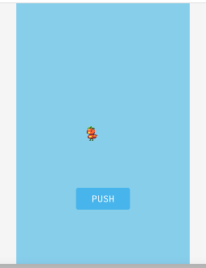

任意のタイミングでアセットを読み込む
- これまでは、ローディングシーンを利用してアセットを読み込んでいました。
- ここでは、任意のタイミングでアセットを読み込む方法について説明します。
AssetLoader
デフォルトでは、ゲーム開始直後のLoadingSceneでアセットの読み込みが行われますが、今回は、AssetLoader クラスを使って、ボタンが押された後に追加のアセットが読み込まれるようにします。
// アセット
var ASSETS_PREV = {
// 画像
image: {
'tomapiko': 'https://cdn.jsdelivr.net/gh/phinajs/phina.js@v0.2.3/assets/images/tomapiko.png',
},
};
var ASSETS_AFTER = {
// 画像
image: {
'nasupiko': 'https://cdn.jsdelivr.net/gh/phinajs/phina.js@v0.2.3/assets/images/character/nasupiyo.png',
},
};
開始時に読み込まれるアセットと追加で読み込むアセットを分けて定義します。
loadメソッドとロード後処理
// アセットローダー
var loader = phina.asset.AssetLoader();
// ボタン
Button({text: 'PUSH'})
.addChildTo(this)
.setPosition(this.gridX.center(), this.gridY.center(4))
.on('push', function() {
// アセット追加読み込み
loader.load(ASSETS_AFTER);
});
var self = this;
// ロード後処理
loader.on('load', function() {
Sprite('nasupiko', 64, 64)
.addChildTo(self)
.setPosition(self.gridX.center(1), self.gridY.center())
.setFrameIndex(0);
});
- phina.asset.AssetLoaderでインスタンスを作成します。
- ボタンが押された時にAssetLoaderクラスのloadメソッドに追加アセットを指定して、読み込みを開始します。
- 追加したアセットを確実に使えるように、アセットが読み込まれた後に発火するAssetLoaderクラスのonloadイベントに処理を書いています。
サンプルコード
コードを見る
/// グローバルに展開
phina.globalize();
// アセット
var ASSETS_PREV = {
// 画像
image: {
'tomapiko': 'https://cdn.jsdelivr.net/gh/phinajs/phina.js@v0.2.3/assets/images/tomapiko.png',
},
};
var ASSETS_AFTER = {
// 画像
image: {
'nasupiko': 'https://cdn.jsdelivr.net/gh/phinajs/phina.js@v0.2.3/assets/images/character/nasupiyo.png',
},
};
/*
* メインシーン
*/
phina.define("MainScene", {
// 継承
superClass: 'DisplayScene',
// コンストラクタ
init: function() {
// 親クラス初期化
this.superInit();
// 背景
this.backgroundColor = 'skyblue';
// スプライト画像作成
Sprite('tomapiko')
.addChildTo(this)
.setPosition(this.gridX.center(-1), this.gridY.center());
// アセットローダー
var loader = phina.asset.AssetLoader();
// ボタン
Button({text: 'PUSH'})
.addChildTo(this)
.setPosition(this.gridX.center(), this.gridY.center(4))
.on('push', function() {
// アセット追加読み込み
loader.load(ASSETS_AFTER);
});
var self = this;
// ロード後処理
loader.on('load', function() {
Sprite('nasupiko', 64, 64)
.addChildTo(self)
.setPosition(self.gridX.center(1), self.gridY.center())
.setFrameIndex(0);
});
},
});
/*
* メイン処理
*/
phina.main(function() {
// アプリケーションを生成
var app = GameApp({
// MainScene から開始
startLabel: 'main',
// アセット読み込み
assets: ASSETS_PREV,
});
// fps表示
//app.enableStats();
// 実行
app.run();
});